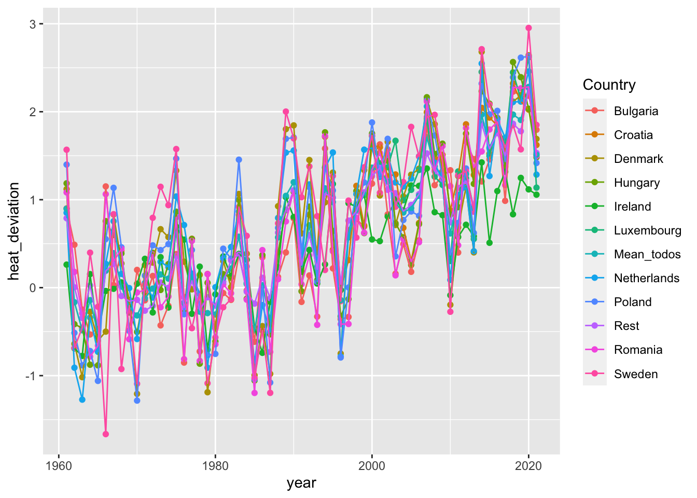
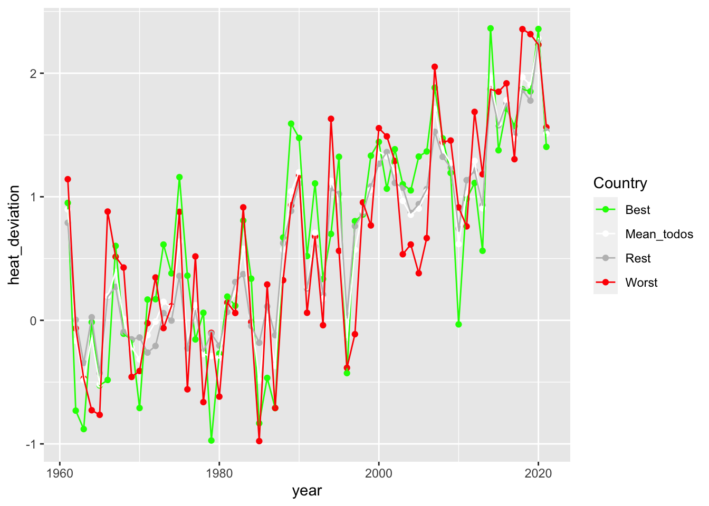
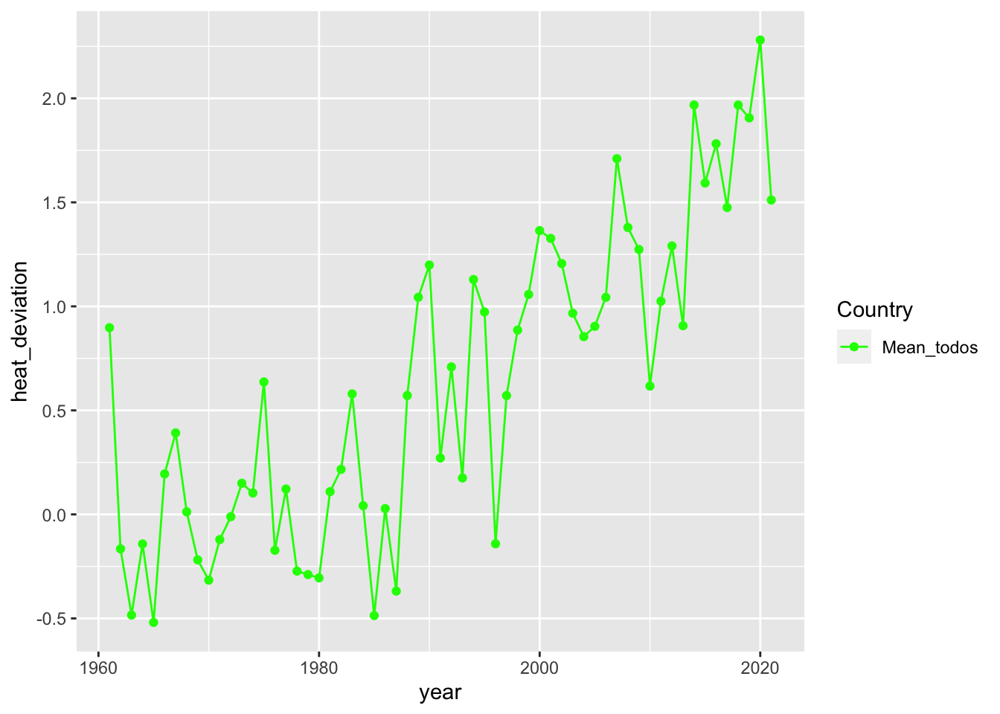
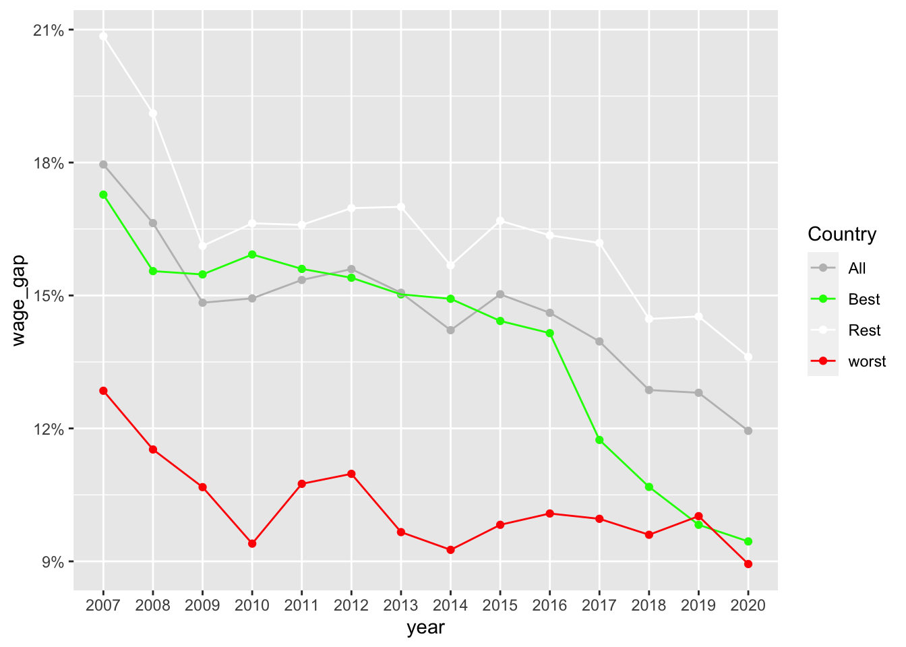
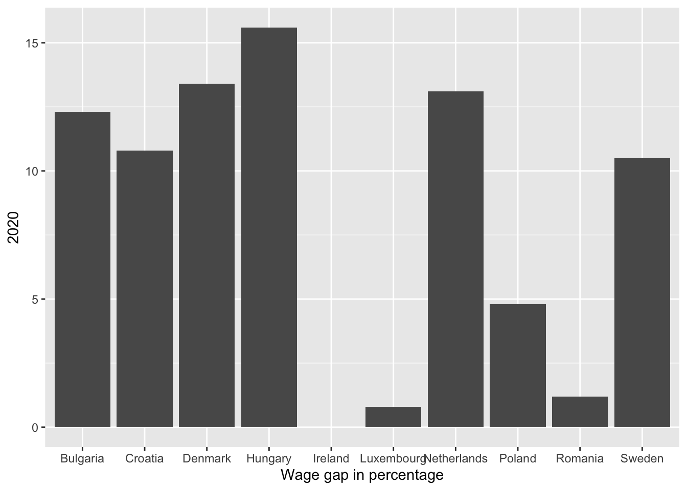
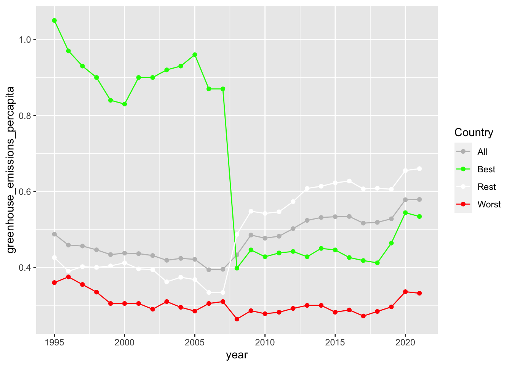
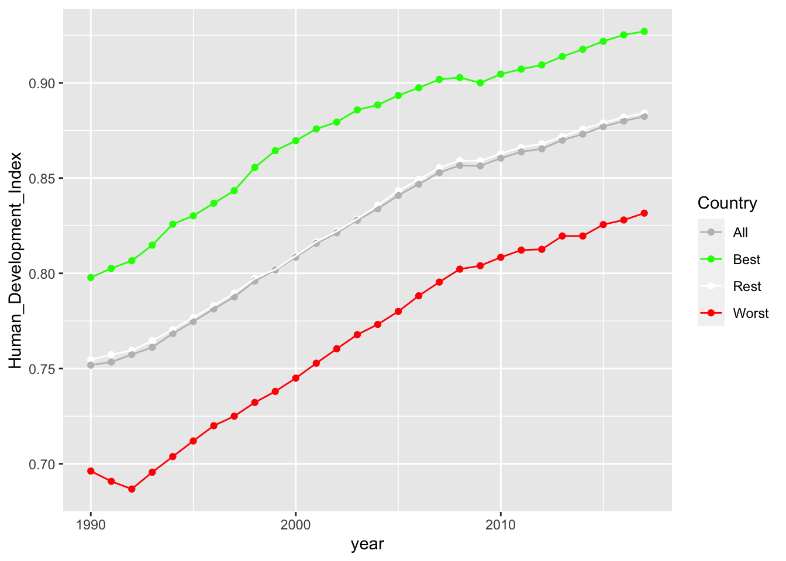

Repo utilizado para elaborar el trabajo en equipo para la asignatura “Programación y manejo de datos en la era del Big Data” de la Universitat de València durante el curso 2022-2023. La página web de la asignatura puede verse: aqui
1 Introducción
Hoy en día estamos todos cansados de escuchar lo mal que va todo, quise hacer este trabajo inicialmente sobre métricas globales, incluyendo países de los 5 continentes, pero encontrar datos adecuados presentó demasiados problemas y EUROSTAT con get_eurostat() resultó ser demasiado conveniente.
Aunque get_eurostat no está sin sus fallos (muchos datasets encontrados en eurostat web no son compatibles con la funciión por alguna razón). Conseguí varios datos interesantes que se prestan para ser analizados y ver qué tan mal/bien le va a Europa en algunas métricas que me parecieron interesantes.
2 Datos
Para el trabajo de investigacion el paquete Eurostat resultó increiblemente útil con ello conseguí la mayoría de los datos utilizados.
Los datos consegyuidos fuera de eurostat fueron aquellos relacionados a los cambios en temperatura, estos los conseguí en Climate Change Dashboard y los datos referentes al Human Devlopment Index, estos los conseguí en la página del United Natios Development Programme
3 Paises a Estudiar
4 Evolucion en grados celsius promedio por año con respecto a una climatología de referencia, correspondiente al período 1951-1980
No es posible apreciar de manera muy clara una diferencia entre la evolución en las variaciones de temperatura entre los países más ricos y aquellos más pobres de la UE. Sin embargo nuestros primeros datos sí se ven algo trágicos pues apreciamos claramente cómo el clima se ha puesto más y más caliente



Los primeros dos gráficos son imposibles de decifrar y en el resto del blog no se usarán más gráficos con cada país individual, en el tercer gráfico vemos lo mismo que vimos en las economías más y las menos ricas. Una Europa cada año más caliente.
Claramente podemos ver, un problema que empezó peor en los países más ricos, ha bajado cada vez más y hoy se ve como un problema mucho menor que hace tan sólo 15 años.

Parece que son los países más pobres los que historicamente menor brecha salarial han tenido, siendo aquellos intermedios aquellos con mayor problema, la brecha se ha visto reducida en toda la Unión Europea, pero queda mucho trabajo por hacer, especialmente en los países intermedios.

Como vimos en la gráfica anterior, en los países estudiados podemos ver una brecha salarial que oscila al rededor de poco menos del 10%. Irlanda no aparece porque tiene NA en los años 2019 y 2020.
6 Evolución en cantidad de emisiones en CO2 equivalente
Parece que en esta ocasión los países más ricos vienen a traer algo de felicidad y es que vemos que desde poco antes de la crisis financiera sus emisiones de CO2 per capita se desplomaron y se quedaron abajo. Los países más pobres parecen nunca haber incurrido en emisiones muy altas por lo que no han cambiado mucho desde 1995

Extraño es ver que al mismo tiempo que las emisiones epr capita de los paises más ricos tiraron para abajo, el resto de Europa incrementó un poco sus emisiones.
7 Evolución de Human Development Index correspondiente
Resultados de esperarse, los países más ricos viven mejor, lo extraño es que parecen crecer a la misma velocidad sin ninguna señal de convergencia en el futuro

El mismo resultado! El resto de los países se encuentran justo en el medio de los más pobre y los más ricos en el Indice del Desarrollo Humano, tampoco parece que pornto lleguen a convergencia con sus contrapartes más afortunadas.
8 Evolución de cuota de electricidad proveniente de fuentes renovables
Esta es justamente la gráfica que más prometedora se veía, al momento de buscar los datos el get_eurostat() funcionaba con el código de este dataset. Por alguna razón dejó de aceptarlo y nunca lo guardé en local. Pero creo recordarlo como una tendencia positiva hacia las energías renovables en toda la UE.
9 Conclusión
Escribir una conclusión
Source Code
---title: "Evolución métricas importantes en Union Europea"author: "Juan David Ríos"date: "2023-01-05"image: "fototriste.jpeg"theme: yetieditor: visualtoc: truetoc-location: lefttoc-depth: 3number-sections: truehighlight-style: pygmentscode-fold: truecode-tools: truehtml-math-method: katex---Repo utilizado para elaborar el trabajo en equipo para la asignatura "Programación y manejo de datos en la era del Big Data" de la Universitat de València durante el curso 2022-2023. La página web de la asignatura puede verse: [aqui](https://perezp44.github.io/intro-ds-22-23-web/.)## IntroducciónHoy en día estamos todos cansados de escuchar lo mal que va todo, quise hacer este trabajo inicialmente sobre métricas globales, incluyendo países de los 5 continentes, pero encontrar datos adecuados presentó demasiados problemas y EUROSTAT con get_eurostat() resultó ser demasiado conveniente.Aunque get_eurostat no está sin sus fallos (muchos datasets encontrados en eurostat web no son compatibles con la funciión por alguna razón). Conseguí varios datos interesantes que se prestan para ser analizados y ver qué tan mal/bien le va a Europa en algunas métricas que me parecieron interesantes. ## DatosPara el trabajo de investigacion el paquete [Eurostat](https://cran.r-project.org/web/packages/eurostat/index.html) resultó increiblemente útil con ello conseguí la mayoría de los datos utilizados.Los datos consegyuidos fuera de eurostat fueron aquellos relacionados a los cambios en temperatura, estos los conseguí en [Climate Change Dashboard](https://climatedata.imf.org/pages/climatechange-data) y los datos referentes al Human Devlopment Index, estos los conseguí en la página del [United Natios Development Programme](https://hdr.undp.org/data-center/human-development-index#/indicies/HDI)```{r, echo =FALSE, results='hide', message=FALSE, warning=FALSE}library(tidyr)library(here)library(dplyr)library(eurostat) #install.packages("eurostat")library(Hmisc) #install.packages("Hmisc")library(countrycode)#install.packages("countrycode")library(DT)options(scipen =100)#devtools::install_github('Mikata-Project/ggthemr')#library(ggthemr)#ggthemr("sky")#sacado de https://climatedata.imf.org/pages/climatechange-data#en grados celsius sacados de Temperature change with respect to a baseline climatology, corresponding to the period 1951-1980df_calor <-read.csv("data/Annual_Surface_Temperature_Change.csv") %>%select(-ObjectId, -ISO2, -ISO3, -Indicator,-Unit, -Source, -CTS_Code, -CTS_Name, -CTS_Full_Descriptor) df_calor$Country =gsub("Netherlands, The","Netherlands",df_calor$Country)df_calor$Country =gsub("Poland, Rep. of","Poland",df_calor$Country)df_calor$Country =gsub("Croatia, Rep. of","Croatia",df_calor$Country)df_calor = df_calor %>%filter(Country %in% eu_countries$name) #%>% filter(Country == "Poland")colnames(df_calor) <-c(1960:2021)colnames(df_calor)[1] <-"Country"df_GDP_total <-get_eurostat("tec00001") #en million eurosdf_GDP_total = df_GDP_total %>%mutate(Country =countrycode(geo, origin ="iso2c", destination ="country.name")) %>%drop_na() %>%filter(unit =="CP_MEUR") %>%separate(col = time,into =c("year","borrar","borrar2"),sep ="-") df_GDP_total = df_GDP_total %>%select(Country, year, values)df_GDP_percap <-get_eurostat("tec00001") #en percap eurosdf_GDP_percap = df_GDP_percap %>%mutate(Country =countrycode(geo, origin ="iso2c", destination ="country.name")) %>%drop_na() %>%filter(unit =="CP_EUR_HAB") %>%separate(col = time,into =c("year","borrar","borrar2"),sep ="-") df_GDP_percap = df_GDP_percap %>%select(Country, year, values) %>%filter(Country %in%eu_countries$name)#wage gapdf_gap =get_eurostat(id ="earn_gr_gpgr2") %>%mutate(Country =countrycode(geo, origin ="iso2c", destination ="country.name")) %>%drop_na() %>%filter(nace_r2 =="B-S") %>%separate(col = time,into =c("year","borrar","borrar2"),sep ="-") %>%select(Country, year, values)#tonne to the air of all greenhouse gasses df_greenhouse =get_eurostat("env_ac_ainah_r2") %>%filter(unit =="T") %>%filter(nace_r2 =="TOTAL") %>%filter(airpol =="GHG")df_greenhouse = df_greenhouse %>%mutate(Country =countrycode(geo, origin ="iso2c", destination ="country.name")) %>%drop_na() %>%separate(col = time,into =c("year","borrar","borrar2"),sep ="-") %>%select(Country, year, values) %>%pivot_wider(names_from = year, values_from = values)#population df_population =get_eurostat("demo_pjan") %>%filter(age =="TOTAL") %>%filter(sex =="T") df_population = df_population %>%mutate(Country =countrycode(geo, origin ="iso2c", destination ="country.name")) %>%drop_na() %>%separate(col = time,into =c("year","borrar","borrar2"),sep ="-") %>%select(Country, year, values) df_population_wide = df_population %>%filter(year >=1995) %>%pivot_wider(names_from = year, values_from = values) %>%filter(Country %in% df_greenhouse$Country)df_greenhouse_percap =cbind(df_population_wide[1],round(df_population_wide[-1]/df_greenhouse[-1],2))#HDIdf_HDI =read.csv("data/Human_Development_Index.csv")df_HDI$Country =gsub(" ","",df_HDI$Country)df_HDI = df_HDI %>%filter(Country %in% eu_countries$name)names(df_HDI) =gsub(pattern ="X", replacement ="", x =names(df_HDI))```## Paises a Estudiar```{r, echo =FALSE, results='show', message=FALSE, warning=FALSE}GDP_top = df_GDP_percap %>%filter(year =="2021") %>%arrange(desc(values)) %>%slice_head(n=5)GDP_bottom = df_GDP_percap %>%filter(year =="2021") %>%arrange(desc(values)) %>%slice_tail(n=5)top_n_bottom =bind_rows(GDP_top, GDP_bottom)top_n_bottom = top_n_bottom %>%mutate(mark =ifelse(Country %in%c(GDP_bottom$Country),"worst","best"))para_dt = top_n_bottom %>%select(-year)x = DT::datatable(para_dt, colnames =c("Country" , "GDP per capita in 2021", "top or bottom"))x```## Evolucion en grados celsius promedio por año con respecto a una climatología de referencia, correspondiente al período 1951-1980::: panel-tabset#### Sólo en paises estudiados```{r, echo =FALSE, results='hide', message=FALSE, warning=FALSE}df_calor = df_calor %>%mutate(mark =ifelse(Country %in%c(GDP_bottom$Country),"worst",ifelse(Country %in%c(GDP_top$Country), "best","rest"))) #%>% filter(mark != "rest")#hacer vertical sum de todos para hacer line graph: best, worst, todos juntosdf_calor_meantodos = df_calor %>%summarise_if(is.numeric,mean, na.rm =TRUE) %>%mutate(Country ="Mean_todos", .before ="1961")df_calor_mean_rest = df_calor %>%filter(mark =="rest") %>%summarise_if(is.numeric,mean, na.rm =TRUE) %>%mutate(Country ="Rest", .before ="1961")df_calor_elegidos = df_calor %>%filter(mark !="rest") df_calor_best = df_calor %>%filter(mark =="best") %>%summarise_if(is.numeric,mean, na.rm =TRUE) %>%mutate(Country ="Best", .before ="1961")df_calor_worst = df_calor %>%filter(mark =="worst") %>%summarise_if(is.numeric,mean, na.rm =TRUE) %>%mutate(Country ="Worst", .before ="1961")df_calor_evolution_bien =bind_rows(df_calor_best,df_calor_worst,df_calor_mean_rest,df_calor_meantodos) %>%pivot_longer(cols =2:62, names_to ="year", values_to ="heat_deviation")df_calor_evolution_bestnworst =bind_rows(df_calor_best,df_calor_worst) %>%pivot_longer(cols =2:62, names_to ="year", values_to ="heat_deviation")df_calor_evolution_bestnworst$year =as.numeric(as.character(df_calor_evolution_bestnworst$year))ggplot(df_calor_evolution_bestnworst, aes(x = year, y = heat_deviation, group = Country, color = Country)) +geom_point() +geom_line() +scale_color_manual(values =c("green", "red"))df_calor_evolution =bind_rows(df_calor_elegidos,df_calor_mean_rest,df_calor_meantodos) %>%pivot_longer(cols =2:62, names_to ="year", values_to ="heat_deviation")```No es posible apreciar de manera muy clara una diferencia entre la evolución en las variaciones de temperatura entre los países más ricos y aquellos más pobres de la UE. Sin embargo nuestros primeros datos sí se ven algo trágicos pues apreciamos claramente cómo el clima se ha puesto más y más caliente#### Toda la union europea```{r, echo =FALSE, results='hide', message=FALSE, warning=FALSE}df_calor_evolution$year =as.numeric(as.character(df_calor_evolution$year))ggplot(df_calor_evolution, aes(x = year, y = heat_deviation, group = Country, color = Country)) +geom_point() +geom_line() df_calor_evolution_bien$year =as.numeric(as.character(df_calor_evolution_bien$year))ggplot(df_calor_evolution_bien, aes(x = year, y = heat_deviation, group = Country, color = Country)) +geom_point() +geom_line() +scale_color_manual(values =c("green", "white","grey", "red"))df_calor_meantodos = df_calor_meantodos %>%pivot_longer(cols =2:62, names_to ="year", values_to ="heat_deviation")df_calor_meantodos$year =as.numeric(as.character(df_calor_meantodos$year))ggplot(df_calor_meantodos, aes(x = year, y = heat_deviation, group = Country, color = Country)) +geom_point() +geom_line() +scale_color_manual(values =c("green"))```Los primeros dos gráficos son imposibles de decifrar y en el resto del blog no se usarán más gráficos con cada país individual, en el tercer gráfico vemos lo mismo que vimos en las economías más y las menos ricas. Una Europa cada año más caliente.:::## Evolución de la brecha salarial como porcentaje::: panel-tabset#### Sólo en paises estudiados```{r, echo =FALSE, results='hide', message=FALSE, warning=FALSE}df_gap_para_means = df_gap %>%pivot_wider(names_from = year, values_from = values)#segundo usaba y que meansxanodf_gap_para_means = df_gap_para_means %>%mutate(mark =ifelse(Country %in%c(GDP_bottom$Country),"worst",ifelse(Country %in%c(GDP_top$Country), "best","rest")))df_gap_best = df_gap_para_means %>%filter(mark =="best") %>%summarise_if(is.numeric, mean, na.rm =TRUE) %>%mutate(Country ="Best", .before ="2020")#View(df_gap)df_gap_worst = df_gap_para_means %>%filter(mark =="worst") %>%summarise_if(is.numeric, mean, na.rm =TRUE) %>%mutate(Country ="worst", .before ="2020")df_gap_rest = df_gap_para_means %>%filter(mark =="rest") %>%summarise_if(is.numeric, mean, na.rm =TRUE) %>%mutate(Country ="Rest", .before ="2020")df_gap_all = df_gap_para_means %>%summarise_if(is.numeric, mean, na.rm =TRUE) %>%mutate(Country ="All", .before ="2020")print(ncol(df_gap_para_means))df_gap_evolution_bestnworst =bind_rows(df_gap_best,df_gap_worst) %>%pivot_longer(cols =2:15, names_to ="year", values_to ="wage_gap")ggplot(df_gap_evolution_bestnworst, aes(x = year, y = wage_gap, group = Country, color = Country)) +geom_point() +geom_line() +scale_color_manual(values =c("green", "red")) +scale_y_continuous(labels =function(x) paste0(x*1, "%"))df_gap_evolution_todo =bind_rows(df_gap_best,df_gap_worst,df_gap_rest, df_gap_all) %>%pivot_longer(cols =2:15, names_to ="year", values_to ="wage_gap")```Claramente podemos ver, un problema que empezó peor en los países más ricos, ha bajado cada vez más y hoy se ve como un problema mucho menor que hace tan sólo 15 años.#### Toda la union europea```{r, echo =FALSE, results='hide', message=FALSE, warning=FALSE}ggplot(df_gap_evolution_todo, aes(x = year, y = wage_gap, group = Country, color = Country)) +geom_point() +geom_line() +scale_color_manual(values =c("grey","green","white","red")) +scale_y_continuous(labels =function(x) paste0(x*1, "%"))```Parece que son los países más pobres los que historicamente menor brecha salarial han tenido, siendo aquellos intermedios aquellos con mayor problema, la brecha se ha visto reducida en toda la Unión Europea, pero queda mucho trabajo por hacer, especialmente en los países intermedios.#### Brecha salarial en nuestros 5 países más pobres y 5 más ricos```{r, echo =FALSE, results='hide', message=FALSE, warning=FALSE}zz = df_gap_para_means %>%filter(Country =="Ireland")View(zz)df_gap_para_barra = df_gap_para_means %>%select("Country","2020") %>%filter(Country %in% top_n_bottom$Country)ggplot(df_gap_para_barra) +geom_bar(aes(x=Country,y =`2020`),stat="identity") +xlab("Wage gap in percentage")```Como vimos en la gráfica anterior, en los países estudiados podemos ver una brecha salarial que oscila al rededor de poco menos del 10%. Irlanda no aparece porque tiene NA en los años 2019 y 2020.:::## Evolución en cantidad de emisiones en CO2 equivalente::: panel-tabset#### Sólo en paises estudiados```{r, echo =FALSE, results='hide', message=FALSE, warning=FALSE}#View(df_greenhouse_percap)df_greenhouse_percap= df_greenhouse_percap %>%mutate(mark =ifelse(Country %in%c(GDP_bottom$Country),"worst",ifelse(Country %in%c(GDP_top$Country), "best","rest"))) #%>% filter(mark != "rest")df_greenhouse_percap_best = df_greenhouse_percap %>%filter(mark =="best") %>%summarise_if(is.numeric, mean, na.rm =TRUE) %>%mutate(Country ="Best", .before ="2021")df_greenhouse_percap_worst = df_greenhouse_percap %>%filter(mark =="worst") %>%summarise_if(is.numeric, mean, na.rm =TRUE) %>%mutate(Country ="Worst", .before ="2021")df_greenhouse_percap_rest = df_greenhouse_percap %>%filter(mark =="rest") %>%summarise_if(is.numeric, mean, na.rm =TRUE) %>%mutate(Country ="Rest", .before ="2021")df_greenhouse_percap_all = df_greenhouse_percap %>%summarise_if(is.numeric, mean, na.rm =TRUE) %>%mutate(Country ="All", .before ="2021")df_greenhouse_perca_evolution_bestnworst =bind_rows(df_greenhouse_percap_best,df_greenhouse_percap_worst) %>%pivot_longer(cols =2:28, names_to ="year", values_to ="greenhouse_emissions_percapita")df_greenhouse_perca_evolution_all =bind_rows(df_greenhouse_percap_best,df_greenhouse_percap_worst, df_greenhouse_percap_rest,df_greenhouse_percap_all) %>%pivot_longer(cols =2:28, names_to ="year", values_to ="greenhouse_emissions_percapita")df_greenhouse_perca_evolution_bestnworst$year =as.numeric(as.character(df_greenhouse_perca_evolution_bestnworst$year))ggplot(df_greenhouse_perca_evolution_bestnworst, aes(x = year, y = greenhouse_emissions_percapita, group = Country, color = Country)) +geom_point() +geom_line() +scale_color_manual(values =c("green","red"))```Parece que en esta ocasión los países más ricos vienen a traer algo de felicidad y es que vemos que desde poco antes de la crisis financiera sus emisiones de CO2 per capita se desplomaron y se quedaron abajo. Los países más pobres parecen nunca haber incurrido en emisiones muy altas por lo que no han cambiado mucho desde 1995#### Toda la union europea```{r, echo =FALSE, results='hide', message=FALSE, warning=FALSE}df_greenhouse_perca_evolution_all$year =as.numeric(as.character(df_greenhouse_perca_evolution_all$year))x =ggplot(df_greenhouse_perca_evolution_all, aes(x = year, y = greenhouse_emissions_percapita, group = Country, color = Country)) +geom_point() +geom_line() +scale_color_manual(values =c("grey","green","white","red")) x```Extraño es ver que al mismo tiempo que las emisiones epr capita de los paises más ricos tiraron para abajo, el resto de Europa incrementó un poco sus emisiones.:::## Evolución de Human Development Index correspondiente::: panel-tabset#### Sólo en paises estudiados```{r, echo =FALSE, results='hide', message=FALSE, warning=FALSE}#View(df_HDI)df_HDI = df_HDI %>%mutate(mark =ifelse(Country %in%c(GDP_bottom$Country),"worst",ifelse(Country %in%c(GDP_top$Country), "best","rest"))) %>%select(-`HDI.Rank`)df_HDIzz = df_HDI %>%filter(Country %in% top_n_bottom$Country)df_HDI_best = df_HDI %>%filter(mark =="best") %>%summarise_if(is.numeric, mean, na.rm =TRUE) %>%mutate(Country ="Best", .before ="1990")df_HDI_worst = df_HDI %>%filter(mark =="worst") %>%summarise_if(is.numeric, mean, na.rm =TRUE) %>%mutate(Country ="Worst", .before ="1990")df_HDI_rest = df_HDI %>%filter(mark =="rest") %>%summarise_if(is.numeric, mean, na.rm =TRUE) %>%mutate(Country ="Rest", .before ="1990")df_HDI_all = df_HDI %>%summarise_if(is.numeric, mean, na.rm =TRUE) %>%mutate(Country ="All", .before ="1990")df_HDI_evolution_bestnworst =bind_rows(df_HDI_best,df_HDI_worst) %>%pivot_longer(cols =2:29, names_to ="year", values_to ="Human_Development_Index")df_HDI_evolution_all =bind_rows(df_HDI_best,df_HDI_worst, df_HDI_rest, df_HDI_all) %>%pivot_longer(cols =2:29, names_to ="year", values_to ="Human_Development_Index")df_HDI_evolution_bestnworst$year =as.numeric(as.character(df_HDI_evolution_bestnworst$year))ggplot(df_HDI_evolution_bestnworst, aes(x = year, y = Human_Development_Index, group = Country, color = Country)) +geom_point() +geom_line() +scale_color_manual(values =c("green","red")) ```Resultados de esperarse, los países más ricos viven mejor, lo extraño es que parecen crecer a la misma velocidad sin ninguna señal de convergencia en el futuro#### Toda la union europea```{r, echo =FALSE, results='hide', message=FALSE, warning=FALSE}df_HDI_evolution_all$year =as.numeric(as.character(df_HDI_evolution_all$year))ggplot(df_HDI_evolution_all, aes(x = year, y = Human_Development_Index, group = Country, color = Country)) +geom_point() +geom_line() +scale_color_manual(values =c("grey","green","white","red"))```El mismo resultado! El resto de los países se encuentran justo en el medio de los más pobre y los más ricos en el Indice del Desarrollo Humano, tampoco parece que pornto lleguen a convergencia con sus contrapartes más afortunadas.:::## Evolución de cuota de electricidad proveniente de fuentes renovables::: panel-tabset#### Sólo en paises estudiados```{r, echo =FALSE, results='hide', message=FALSE, warning=FALSE}library(meme) my_meme_1 <- here::here("posts", "trabajo", "data","meme_1.jpeg")my_meme_2 <- here::here("posts", "trabajo", "data","meme_2.jpeg") meme(my_meme_1, "Aquí tendría un bello gráficode la evolución del porcentaje de electricidad", "proveniente energías reutilizables", size =2.0, color ="red")meme(my_meme_2, "PERO NO GUARDÉ EL DATAFRAME EN LOCAL","Y YA NO FUNCIONA EL GET_EUROSTAT!!", size =2.0, color ="red")```Esta es justamente la gráfica que más prometedora se veía, al momento de buscar los datos el get_eurostat() funcionaba con el código de este dataset. Por alguna razón dejó de aceptarlo y nunca lo guardé en local. Pero creo recordarlo como una tendencia positiva hacia las energías renovables en toda la UE.:::## ConclusiónAl parecer sí hay cosas por las que preocuparse, en espcial con el calentamiento global, pero casi todas las otras métricas están para mejor, una brecha salarial cayendo, un Indice del Desarrollo humano hacia arriba (aunque sin convergencia).Sin embargo lo que más me queda de este trabajo y espero jamás olvidar es acordarme de guardar los datos en local.